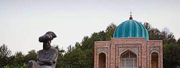
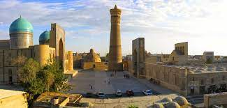
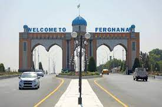
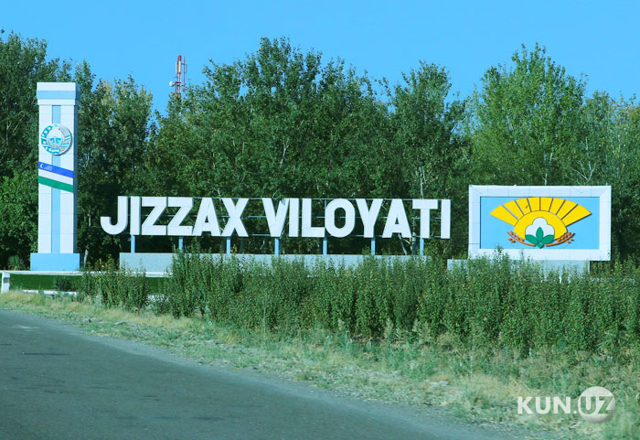
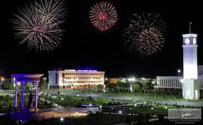
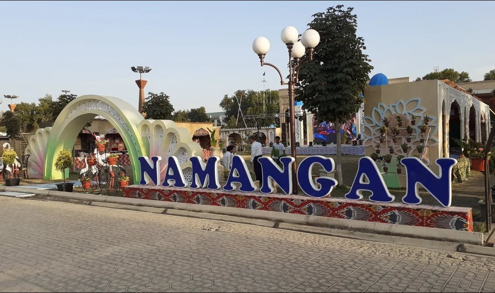
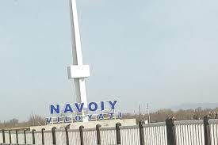

O'zbekiston |
|
Toshkent 2200-yildan ortiq tarixga ega[9]. Bu davr ichida u mudofaa devori bilan oʻralgan qalʼadan jahondagi yirik shaharlardan biri, Oʻzbekiston Respublikasining poytaxtigacha boʻlgan yoʻlni bosib oʻtdi. Asrlar davomida shahar oʻzining tinch hayotidagi muhim voqealarni va suronli jangu jadallarni, yuksalish va inqiroz davrlarini boshidan kechirdi. Necha bor shahar vayron boʻlib, qayta qad koʻtardi. Toshkent oʻrnidan necha bor siljib, nomi xam bir necha marta oʻzgardi. Xoja Ahror Valiy, Shayx Umar Bogʻistoniy, Abu Bakr Shoshiy, Abu Sulaymon Banokatiy, Hofiz Koʻhakiy kabi buyuk allomalar shu hududda yashab, ijod etganlar. Shahar sifatida Toshkent haqidagi birinchi maʼlumotlar eramizdan avvalgi II asrdagi qadimgi-sharqiy manbalarda uchraydi; Xitoy manbalarida Yuni deb atalgan; Fors shohi Shоpur I eramizdan avvalgi 262-yildagi „Zardusht Kaʼbasi“ qaydnomalarida Toshkent vohasi Choch deb nomlangan. Choch — oltin eksporti, qimmatbaho toshlar, shirinliklar va aslzot otlarni boshqa shahar va mamlakatlarga olib oʻtishdagi yoʻlning chorrahasida joylashgan. „Tosh shahar“ maʼnosini anglatuvchi bugungi Toshkent — zamonaviy respublikaning poytaxti, oʻtmish maʼlumotlarini saqlovchi, Oʻzbekiston tarixi haqida koʻp maʼlumotlarni xotirlovchi, 2 milliondan ortiq aholisi boʻlgan bu shahar Markaziy Osiyoning eng katta industrial markazlaridan biridir.[manba kerak] Toshkentning uzoq oʻtmishi va u qad koʻtargan qadimgi Choch yoki Shosh viloyati haqidagi maʼlumotlar yozma manbalarda xilma-xil hamda uzuq-yuluq tarzda aks etgan. Zardushtiylarning qadimgi muqaddas kitobi Avesmona Sirdaryo havzasidagi mamlakat „Turon“, aholisi esa „tur“lar deb yuritilgan. Bu oʻlkada tur qavmlari urugʻ va qabila oqsoqollarining diniy va siyosiy qarorgohi — Qangʻxa (Qangʻa) shahri borligi tilga olinadi. Toshkent haqidagi dastlabki aniqroq maʼlumotlar miloddan avvalgi 2-asr — milodiy 5-asrlarga mansub Xitoy manbalarida uchraydi. Ularda Toshkent viloyati qadimda Loyuyeni, Yuni, soʻngra Chjeshe, Chjechji, Chjesi va Shi deb nomlangan. Bu atamalar (avvalgi ikkitasidan tashqari) „Choch“ soʻzining xitoycha talaffuz etilishi natijasida hosil boʻlib, hatto oxirgi „Shi“ toponimi xitoychada „tosh“ maʼnosini anglatgan. Miloddan avvalgi 3-asrda qadimgi Choch viloyatida tashkil topib, milodning 3-asrlarigacha hukm surgan „Qangʻ“ („Qangʻa“ yoki „Qangʻxa“) davlati Xitoy yozma manbalarida „Kangkiya“ („Kanizyuy“) nomlari bilan tilga olinadi. Qadimgi toxarlar tilida „qangʻ“ soʻzi ham „tosh“ maʼnosini anglatgan. Bu davlatning poytaxti — Bityan shahri boʻlib, u Iosha-Xasart daryosi (Sirdaryo) boʻyida joylashgan. Bityan shahri Davan (Fargʻona vodiysi)dan 1510 li (528 km) masofada boʻlgan. Bityan shahrining bizgacha saqlanib qolgan xarobalari mahalliy aholi oʻrtasida „Qanqatepa“ nomi bilan mashhur. U Toshkentdan 70 km janubda — Sirdaryoga yaqin yerda, Ohangaron daryosining qurib qolgan qadimgi oʻzani boʻyida joylashgan. Arxeologik maʼlumotlardan maʼlum boʻlishicha, Qanqatepa miloddan avvalgi 3-asrdayoq atrofi mudofaa devori bilan oʻralgan hamda arkli katta shahar boʻlib, maydoni 160 gektarga teng boʻlgan. Qadimgi Qangʻ davlatining fuqarolari ham „qangʻar“, „qanzar“, keyinchalik „qanhi“, „qangʻli“ yoki „qaʼni“ deb nomlangan. Ular (qanqalar) hindlarning qadimgi kitobi „Mahabharata“da saklar va toxarlar nomlari qatorida tilga olingan. Yozma manbalarda keltirilishicha, Toshkentning qadimgi nomi „Choch“ boʻlgan. Toshkent arablar tasarrufiga oʻtgach, arab alifbosida „ch“ harfining yoʻqligi bois arabiy asarlarda „Shosh“ deb yuritilgan. Ilk oʻrta asrlarda u „Choch“, „Shosh“, „Shoshkent“, „Madinat ash Shosh“, „Binkat“ va „Tarkan“ deb nomlangan. Toshkent haqidagi dastlabki maʼlumotlar mahalliy olimlar (Xorazmiy) va tarixchi geograflardan Tabariy, Istahriy asarlarida uchraydi. Istahriyning „Kitob al masolik val mamolik“ („Yoʻllar va mamlakatlar toʻgʻrisidagi kitob“)ida Shoshning bosh shahri Binkat deb koʻrsatiladi. 10-asrda yozilgan (muallifi nomaʼlum) „Hudud ul Olam“ („Olamning chegaralari“) kitobida „Choch bu katta viloyat, xalqi jangovar va sahiydir. U yerda kamon va oʻqyoy yasaladi. Binkat Chochning poytaxti hisoblanadi. Bu katta shahar, ayni vaqtda podshoning qarorgohidir“, deb taʼriflanadi. Firdavsiyning „Shohnoma“ asarida Choch oʻzining kamoni Shoshiy (oʻqyoylari) bilan mashhurligi haqida misralar bor. Shahar „Toshkent“ nomi bilan dastavval 11-asrning mashhur allomalari — Abu Rayhon Beruniy va Mahmud Qoshgʻariyning asarlarida tilga olinadi. Beruniy „Hindiston“ asarida Toshkent nomining kelib chiqishi toʻgʻrisida soʻz yuritib, „Tosh“ soʻzi asli turkcha boʻlib, Shosh koʻrinishini olgan. „Toshkand — toshli qishloq demakdir“, deb izohlaydi. Mahmud Qoshgʻariyning maʼlumoti boʻyicha, Toshkent 11-12-asrlarda „Tarkan“ deb ham yuritilgan. Zahiriddin Muhammad Bobur „Boburnoma“da Toshkent nomi ustida toʻxtalib, asarlarda Toshkent nomini Shosh, baʼzan Choch yozadilar" deb qayd etadi. Biroq 16-asr oxiri va 17-asr boshlarida Toshkent toponimi shuhrat topib, uning qadimgi Choch, Shosh va Binkat nomlari asta-sekin muomaladan tushib qoldi. 17-asrda yashagan tarixchi olim Mahmud ibn Vali shunday yozadi: „Shosh — Sayxun (Sirdaryo)ning u tomoniga joylashgan shahar va Turkiston (viloyat)ga qaraydi… Uni Choch ataydilar. Biroq hozirgi vaqtda u Toshkent nomi bilan mashhurdir“. Toshkent vohasida shahar madaniyatining shaqllanib, shaharning qad koʻtarishi shu oʻlkada yashagan qadimgi chorvador va dehqonlarning ijtimoiy-iqtisodiy va madaniy hayotidagi ulkan tarixiy jarayon boʻlib, bu jarayon shubhasiz oʻlkaning oʻzlashtirilib, obod etilishi, ayniqsa, unda chorvachilik va dehqonchilik xoʻjaliklarining tashkil topishi hamda hunarmandchilik, ichki va tashqi savdoning rivojlanish tarixi bilan uzviy bogʻliqdir. Bu jarayonning tarixiy manzarasi nihoyatda keng boʻlib, u yozma manbalarga nisbatan koʻproq arxeologik tadqiqotlar vositasi bilan tiklanmoqda. Shuning uchun ham Toshkent hududida olib borilgan arxeologik tadqiqotlarning natijalari qadimgi va oʻrta asrlarga oid manbalardagi maʼlumotlarni toʻldirib, ularga aniqlik kiritmoqda. 1867-yilda Toshkent Turkiston general-gubernatorligining markaziga aylandi. 1930-yildan 1991-yilgacha Toshkent Oʻzbekiston SSR poytaxti boʻlgan.
Andijon Viloyatda foydali qazilmalarni qazib chiqarish, paxtachilik shundayligicha xom ashyo sifatida metropoliyam joʻnatilar edi. 1907-yil yarim hunarmandchilikka asoslangan yogʻ zavodi qurildi. Dastlab bu zavod bir kecha-kunduzda 50 t chigitni qayta ishlab, 8 t ga yaqin yogʻ chiqarar edi. 1954-yilda zavod yogʻ-moy kombinatiga aylantirildi. 1960–70 yillarda Andijon shahrida „Elektrodvigatel“, „Elektroapparat“ kabi yirik korxonalar, Marhamatda esa „Elektrotexnika“ zavodi qurildi. 1941-yil Andijon shahrida motorsozlik zavodi ishga tushirildi. Mustaqillik yillarida viloyat industriyasi oʻz yoʻnalishini oʻzgartirib, tubdan rivojlanmoqda. Mavjud korxonalar davlat tasarrufidan chiqarilib, mulkchilikning oʻzgacha shakliga kirib bormoqda. Xususan aksariyat yirik va oʻrta korxonalar negizida aksiyadorlik jamiyatlari tashkil etildi. Viloyatda mulkchilikning barcha turiga oid 160 sanoat korxonasi bor (2000). Bulardan yiriklari: Bobur nomidagi ip-gazlama ishlab chiqarish aksiyadorlik jamiyati (Andijon shahrida; tumanlarda boʻlimlari bor), „Andijon agrofirmasi“ aksiyadorlikjamiyati, Andijon avtomobil oʻrindiqlari zavodi, Andijon biokimyo zavodi, Andijon irrigatsiya mashinasozlik zavodi, Andijon „Semurgʻ“ trikotaj aksiyadorlik birlashmasi, Andijon don mahsulotlari" aksiyadorlik jamiyati, „Andijonkabel aksiyadorlik jamiyati“, Chinobod paxta tozalash aksiyadorlik jamiyati. 1991–2000-yillar davomida Andijon viloyatida jahon andozasi darajasidagi mahsulotlar ishlab chiqaruvchi zamonaviy qoʻshma korxonalar bunyod qilindi. Viloyatda 79 qoʻshma korxona, 8447 kichik va xususiy korxona mavjud. Viloyatdagi qoʻshma korxonalar butun viloyat yalpi sanoat mahsulotining 53 %dan koʻprogʻini ishlab chiqarmokda (2000). Oʻrta Osiyoda yagona avtomobilsozlik korxonasi – Oʻzbek-Janubiy Koreya „OʻzDEU avto“ kompaniyasi Asaka shahrida joylashgan. Italiyaning „Aka-uka Federichi“ aksiyadorlik jamiyati bilan hamkorlikda Asakada barpo etilgan Oʻzbek-Italiya „FAM“ qoʻshma korxonasi soatiga turiga qarab 1–1,5 t makaron ishlab chiqarish quvvatiga ega. Shahrixon tumanidagi Segazaqum qishlogʻida kalava ip tayyorlaydigan va kelgusida undan gazlama toʻqiydigan „ANTEKS“ ochiq turdagi aksiyadorlik jamiyati korxonasi barpo etildi va irrigatsiya bilan bogʻliq boʻlgan tarmoklar, paxtani qayta ishlash, mashinasozlik va metallsozlik, elektrotexnika sanoatlari, qurilish materiallari ishlab chiqarish, kimyo, yengil (ip-gazlama, paypoq fabrikalari va boshqalar), oziq-ovqat sanoati eng rivojlangan tarmoklardir. Viloyat mamlakatda neft va gaz qazib chiqarishda salmoqli oʻrin tutadi. Oʻnga yaqin neft va neft-gaz konlari (Andijon neft koni, „Xoʻjaobod“, „Boʻston“, „Janubiy Olamushuk“, „Xartum“, „Polvontosh“, „Xoʻjausmon“ va boshqalar) ishlab turibdi. Xoʻjaobod – Andijon – Asaka gaz quvuri bor. Andijon viloyatida dastlabki paxta tozalash zavodlari Andijon shahrida 1911-yilda, Asakada 1912-yilda, Shahrixonda 1915-yilda qurilgan. Sanoatning bu turi paxta yetishtirishga qarab tez rivojlandi. 1924-yil paxta zavodlarida 25 ming t xom ashyo qayta ishlangan edi. 1999-yilda mavjud 13 ta paxta qayta ishlash korxonalarida 325 ming tdan ziyod paxta qayta ishlandi. Viloyatda yetishtirilayotgan pilla, jun, teri umuman qayta ishlanmasdan, lanib, 1999-yil oktabr ida ishga tushirildi). Baliqchi tumani notoʻqima matolar ishlab chiqarish yopiq turdagi aksiyadorlik jamiyati shaklidagi Oʻzbek – Amerika qoʻshma korxonasi ham oʻz mahsulotlari bilan chet elda eʼtibor qozongan korxonalardandir. Qoʻshma korxona zamonaviy uskunalar bilan qayta jihozlandi. Kalava ip va xom gazlama tayyorlanadigan mazkur korxonada 1300dan ortiq ishchi ishlaydi (2000). Shuningdek, viloyatda rivojlangan mamlakatlarning sarmoyalari jalb qilingan „Andijon-Praga“, „Andijon durdonasi“, „Navigul“, „Oʻz-Koromko“, Oʻzbek-Rus-Britaniya „Mask“, „Al-Osiyo“ qoʻshma korxonalari va Oʻzbek-Amerika qoʻshma korxonasi filiali bor. Qishloq xoʻjaligi Viloyat qishloq xoʻjaligining asosiy tarmogʻi – paxtachilikdir. Paxtaning yalpi hosili va hosildorligi jihatidan Andijon viloyati mamlakatda oldingi oʻrinlarda turadi. Ayniqsa mustaqillikdan keyin paxtakorga erkinlik berilgach, paxtachilikda tub oʻzgarishlar sodir boʻldi. 1997-yildan chigitni keng maydonlarda plyonka ostiga ekish texnologiyasi joriy etildi (mazkur texnologiyani qoʻllashda viloyat hokimi, Oʻzbekiston Qahramoni Qobiljon Obidov katta jonbozlik koʻrsatdi). Paxta, gʻalla almashlab ekilishi yoʻlga qoʻyildi. Faqat mineral oʻgʻitlarga qarab qolmasdan mahalliy oʻgʻitlardan ham foydalanildi. Xususan gidroliz zavodining chiqindilaridan kompost tayyorlab, tuproq unumdorligini oshirishga ahamiyat berildi; ekin qator oralariga ammiak suvi oqizish oʻzlashtirildi. Gʻoʻza navlarini tuproq va iqlim sharoitiga koʻra tanlashga eʼtibor berildi. Har yili katta maydonlarda paxtaning „Oqdaryo“, „Armugʻon“, „Fargʻona-5“ singari istiqbolli navlari sinab koʻrildi va muntazam yangilanib borildi. Keyingi yillarda sinovdan oʻtib, ertapishar, tolasi pishiq, chigiti toʻla, kasalliklarga chidamliligiga ishonch hosil qilingan „Okdaryo“ navi koʻproq ekildi. Natijada mamlakatning boshqa viloyatlariga qaraganda gʻoʻza Andijon viloyatida barvaqt yetilmoqda. Sentabr oyiga qadar hosilning asosiy qismi yigʻib olinmoqda va yuqori navlarga oʻtkazilmoqda. 2000-yilda Oltinkoʻl tumanidagi „Ittifoq“ jamoa xoʻjaligida gektaridan oʻrtacha 45,7 s, Asaka tumanidagi „Yangi hayot“ jamoa xoʻjaligida 48,4 s atrofida hosil olindi. Shahrixon tumanidagi Gʻ. Joʻrayev nomidagi jamoa xoʻjaligining fermeri N. Toshmatov 60 sdan xirmon uydi.Andijon viloyatida 2000-yilda sentabr oyidayoq 305 ming tdan ziyod paxta tayyorlanib, shartnoma rejasi mamlakatda birinchi boʻlib bajarildi. Gʻallachilikda ham „Andijon maktabi“ yaratildi. Don 3 barobar koʻpayib, hosildorlik 1,2-marta oshdi. 2000-yilda gʻalla hosildorligi moʻljaldagi 70,8 sdan oshib ketdi. Marhamat tumanining Ulugʻtogʻ adirlarida Oxunboboyev nomidagi jamoa xoʻjaligining ijarachisi Muhammadsharif Toshpoʻlatov 67 s dan, Baliqchidagi Xayrixon Ergasheva nomidagi shirkat xoʻjaligida ijarachilardan Erkinboy Shukurov, Alijon Komilov, Turobjon Hakimov 85 sdan don olishdi. Shahrixon tumanidagi „Oltin vodiy“ jamoa xoʻjaligi gʻallachilik brigadasi boshligʻi Oʻzbekiston Qahramoni Sodiqjon Abdurasulov uzoq yillar davomida donchilikda va paxtachilikda yuqori koʻrsatkichlarga erishdi. U Andijon viloyatida boshqa mintaqalardan keltirilgan yangi bugʻdoy navlarini sinash va ulardan moʻl hosil olish boʻyicha tajriba maktabi yaratdi. 2000-yil hosili uchun viloyatda 74 ming ga maydonga elita va superelita urugʻlari ekildi. Kuzgi bugʻdoyning istiqbolli „Andijon–1“, „Andijon–2“, „Chillaki“ navlari sinab koʻrilib, ularning parvarish tartibi aniqlab chiqildi.Keyingi yillarda boshqa viloyatlarda ham andijonliklar yaratgan yangi navlar keng ekilmoqda. 2000-yilda davlatga 250 ming t ga yaqin gʻalla topshirildi. Uning 150 ming t sidan ziyodini sara urugʻlik tashkil etadi. Gʻallachilik 1999-yilda Andijon viloyatiga 9,3 mlrd. soʻmdan ortiq daromad keltirdi. (1994-yil yanvarda bosh Asaka avtomobil zavodidan chiqqan yangi avtomobillar. Oʻzbekiston Respublikasi Prezidenti Islom Karimov Asaka avtomobil zavodila, 1996-yil 19-iyul. Qishloq xoʻjalikda, shuningdek bogʻdorchilik, tokchilik, sabzavotchilik, don va chorvachilik mahsulotlari yetishtirish bilan ham shugʻullaniladi. Bogʻdorchilikda Andijon viloyati anor, anjir, bodom, behi, nok, shaftoli, olma, uzum yetishtirish bilan ayniqsa mashhur. Viloyatda aholi soni koʻpligi sababli adirlarda bogʻlar yaratishga katta ahamiyat berilgan. Shunday bogʻlardan eng mashhuri „Sohibkor“ meva-tokchilik ishlab chiqarish shirkatlar uyushmasi bogʻidir. Mazkur bogʻ 1981-yilda, Asaka tumanidagi Fayziobod qishlogʻidan 3–4 km narida Asaka adirlarining suvsiz qovjirab yotgan yerlari bagʻrida pastdan quvur orqali suv chiqaribyara-tilgan. Bogʻning barpo etilishi Oʻzbekistonda xizmat koʻrsatgan qishloq xoʻjalik xodimi Tilavoldi Yoqubov nomi bilan bogʻliq. Andijon viloyati bogʻlarida mevali daraxtlardan tashqari toknint Andijon kora uzu mi navi keng ekiladi. Qishloq xujalikda foydaniladigan yerlar maydoni tomorqa yerlarini qoʻshgan holda 256,7 ming ga. Qishloq xujalik ekinlari ekiladigan jami yerlari 257,6 ming ga, shu jumladan haydaladigan yer 200,9 ming ga, yaylovlar 21,7 ming ga (2000). Barcha ekin maydoni 202,5 ming ga, shu jumladan don ekinlari 82,5 ming ga, paxta ekiladigan yer PO ming ga, kartoshka, sabzavot-poliz ekinlari 4,9 ming ga, ozuqa ekinlari 16,1 ming ga, 3500 ga oʻrmonzor bor (2000). Grechixa va soya ham yetishtirilmoqda. Umuman viloyatda mirishkor dehqon yil davomida 2–3-martadan hosil olmokla. Andijon viloyatida Usmon Yusupov nomidagi Katta Fargʻona, Janubiy Fargʻona, Katta Andijon, Savay, Andijonsoy, Shah-rixonsoy va boshqa kanallar bor. Adir zonalaridagi dalalarga suv nasos stansiyalari yordamida chiqariladi. Qoradaryoda Andijon suv ombori barpo qilingan. Yerning meliorativ holatini yaxshilash maqsadida 7,8 ming km kollektor-drenaj tarmokdari qurilgan. Viloyatning hamma tumanlaridagi sugʻoriladigan maydonning asosiy qismida paxta va don ekiladi. Andijon viloyatida 13 jamoa xoʻjaligi, 6 davlat xoʻjaligi, 13 xoʻjaliklararo korxona, 133 shirkat xoʻjaligi, 36 boshqa xoʻjalik, 2724 fermer xoʻjaligi mavjud. Jamoa xoʻjaliklarida chorvachilik asosan sut yetishtirishga ixtisoslashgan, togʻ oldi va togʻli tumanlarda qoʻychilik rivojlangan. 95 ming qoramol, 56 ming sigir, 65 ming qoʻy va echki, 190,2 ming parranda bor (2000).
Buxoro qadimdan shoir va ulamolar toʻplangan eng yirik shaharlardan biridir. Unga „Qubbat ulislom“, „Buxoroyi sharif“ unvonlari berilgan. Buxoroda „malik ulkalom“ Abu Abdulloh Jaʼfar Rudakiy yashab, ijod qildi. Narshaxiyshtt „Buxoro tarixi“ asarida goʻzal sheʼriy parchalar mavjud. Balʼamiy Tabariyning „Taʼrix…“ asarini Buxoroda fors tilida qaytadan yozgan. Ibn Sino buyuk qomusiy olim boʻlish bilan birga arab va forstojik tillarida shsʼriy asarlar yozgan. Buxorolik Daqiqiy Abu Mansur Muhammad Firdavsiyning ustozi boʻlib, „Shohnoma“ dostonini dastlab u yoza boshlagan. Abu Mansur Saolibiy „Yatimat ud-dahr“ tazkirasida 10-asrda poytaxt Buxoroda yashab arab tilida ijod qilgan 25 shoir haqida qimmatli maʼlumotlar keltiradi. Uning yozishicha, „Buxoro Somoniylar hukmronligi davrida shonshuhrat makoni, saltanat kaʼbasi va zamonasining ilgʻor kishilari jamlangan, yer yuzi adiblarining yulduzlari porlagan va oʻz davrining fozil kishilari yigʻilgan joy edi“. Avfiy Buxoriy adib, tarjimon va tazkiranavis olim edi. U Turon adabiyotida tazkiranavislik janriga asos solgan. Sharofiddin Buxoriy (13-14-asrlar) mashhur „Chor kitob“ni tuzgan shofirkonlik ulugʻ mutasavvuf shoirdir. Temuriylar sulolasi davrida Buxoroda Nosir Buxoriy, Ismat Buxoriy (1365-1426), Burunduq Buxoriy, Tohir Buxoriy, Xayoliy Buxoriy, Sayfiy Buxoriy (15-asr) kabi shoirlar yashab, devon tuzishgan. Ismat Buxoriy oʻzbek, fors va arab tillarida sheʼr yozish anʼanasini Buxoroda boshlab berdi. „Ibrohim Adham“ dostonini oʻzbekchada bitdi. U temuriy shahzoda Xalil Sultonning murabbiysi edi. Muhammad Solih Muhammad Shayboniyxonga bagʻishlangan oʻzbekcha „Shayboniynoma“ dostonini yezdi. Shayboniylar sulolasining vakillari boʻlgan Buxoro xonlari Muhammad Shayboniyxon „Shayboniy“, Ubaydullaxon ibn Mahmud Sulton „Ubaydiy“, Abdullaxon II „Xon“ ta xalluslari bilan sheʼr va dostonlar yozishdi, devon tuzishdi. Xususan, Ubaydullaxonning ijodi sermahsul boʻlib, u oʻzbek, fors, arab tillarida lirik gʻazallar, masnaviy yoʻlida soʻfiyona mazmun bilan sugʻorilgan risolalar yozgan.Hasanxoʻja Nisoriy „Muzakkiri ahbob“ tazkirasida 16-asrda faqat Buxoroning oʻzida yashab, ijod qilgan 110 nafar shoir va tarixchilarning nomlarini keltiradi. Ular orasida Mavlono Abdurahmon Mushfiqiy, Mavlono Majlisiy, Fazlulloh ibn Roʻzbehon Isfahoniy („Mehmonnomayi Buxoro“ tarixiy asari va oʻzbekcha sheʼrlari bor), Mavlono Naxliy (1549-1636; u Hofiz Tanish Buxoriy boʻlib, „Abdullanoma“ — „Sharafnomai shohiy“ tarixiy asarining muallifidir), Mavlono Xoja Muhammad Sadr (Afzaliy), Mavlono Foniy, Mavlono Qabuliy Buxoriy, Devona Husomiy (Husomiy Qorakoʻliy; 1442-1505), Sayd Podshohxoʻja bin Abdulvahhobxoʻja (Xoja), Mavlono Kasiriy, Mavlono Afsariy, Sayfiy Aruziy, Saqqo Buxoriy kabi mashhur shoirlar bor. Turdiy Farogʻiy, Buxoriy Naxliy, Shavkat Buxoriy (17-asr), Mulham Buxoriy, Voras, Saidkamol Fitrat (17-18-asrlar), Imlo Buxoriy, Abdullatif Kirom Buxoriy (18-asr) ashtarxoniylar davridagi eng taniqli shoirlar edi. Buxoro viloyati da mashhur shoir Sayido Nasafiy (17-asr) yashab ijod qildi. Yirik faylasuf olim Muhammad Sharif Buxoriy (vafoti 1697) „Favoidi Hoqoniyya“ (1643), Muhammad Yusuf Munshiy „Tarixi Muqimxoniy“, Mir Muhammad Amir Buxoriy „Ubaydullanoma“, Muhammad Amin ibn Muhammad Zamon Buxoriy „Muhit attavorix“ tarixiy asarlarini yozishdi. Mir Muhammad Amin Buxoriy Subxonqulixon (hukmronligi 1681 — 1702) va Ubaydullaxon II ibn Subxonqulixon (hukmronligi 1702-1711) saroyida bosh munshiylik lavozimida xizmat qildi. Buxoro xoni Subxonqulixon „Nishoniy“ taxallusi bilan sheʼrlar yezdi. Muhammad Vafoyi Karminagiy (1685-1769) „Tuhfat ulXoniy“ („Xon tuhfasi“) kitobining muallifidir. Shoir, tarixchi va munajjim Abdurahmon Toleʼ (18-asr) „Tarixi Abulfayzxon“ asarini yaratdi. Muhammad Sharif Buxoro amirligi tarixiga oid „Toj uttavorix“ (1800) asarini yezdi. Buxoroda mangʻitlar sulolasi davrida Mirzo Sodiq Munshiy, Mirzo Ato, Muhammad Nishotiy, Mujrim Obid, Soʻfixoʻja Soʻfiy, Bebok, Vozeh, Savdo (1824-73), Muztarib, Iso Maxdum Buxoriy (1827-88), Muhammad Siddiq Hayrat (1876-1902), Abdurahmon Tamkin (1851-1915), Mirzo Hayit Sahbo, Ahmad Donish, Yaʼqub ibn Doniyol Buxoriy (17711831), Mulla Ibodulla va Mulla Muhammad Sharif (18-19-asrlar), Muhammad Olim Buxoriy (19-asr), Mirzo Abdulazim Somiy Boʻstoniy kabi shoir va tarixchilar ijod qilishgan. Sadr Ziyo — Sharifjon Maxdum (1867-1932), Mirzo Sirojiddin Hakim (18771912), Mulla Ikrom (Ikromcha domla) ham ularning munosib izdoshlari edi. Buxorolik Afzali Pirmastiy (vafoti 1915) „Afzal uttazkor“ (1904) tazkirasida 19-asr oxiri — 20-asr boshida Buxoroda yashab oʻtgan 135 ijodkor haqida maʼlumot beradi. Jadid adabiyotining tamal toshini qoʻyganlar safida buxorolik Abdurauf Fitrat va Sadriddin Ayniy bor. Abdulvohid Burhonov „Munzim“ taxallusi bilan sheʼrlar yozgan.20-asrda Buxoroda oʻziga xos adabiy muhit shakllandi. Sulton Joʻra (1910- 43), Muhammadjon Rahimiy (1901-67), Jalol Ikromiy, Toshpoʻlat Hamid (1927-84), Saʼdulla Karomatov, Nemat Aminov, Jamol Kamol, Omon Muxtor, Oydin Hojiyeva, Toshpoʻlat Ahmad kabi shoir va adiblar shoʻrolar rejimi davrida ham badiiy jihatdan pishiqasarlaryaratshddi. Bugungi oʻzbek adabiyotining taraqqiyotida Gulchehra Joʻrayeva, Usmon Qoʻchqor, Sadriddin Salimov, Tilak Joʻra, Nortoʻxta Qilich, Safar Barnoyev, Yusuf Jumayev, Halima Ahmedova, Ahad Hasan, Vafo Fayzullo, Sulaymon Rahmon, Chorshaʼm Roʻzi kabi shoir va yozuvchilarning oʻziga xos hissasi bor. Mustaqillik davrida buxorolik ijodkorlar oʻz salaflarining anʼanalariga sodiq qolgan holda oʻzbek, tojik, rus tillarida samarali ijod qilishmoqdasrBuxoro viloyatida Oʻzbekiston ijodiy uyushmalari (yozuvchilar, rassomlar, meʼmorlar, jurnalistlar va boshqalar) ning viloyat shoʻ’balari faoliyat koʻrsatmoqdasr. Matbuoti, radnoeshittnrnshn va televvsheniyesi Buxoro viloyati da 2 viloyat gaz. („Buxoronoma“, „Buharskiy vestnik“), 11 tuman gaz., 2 shahar gaz. chiqadi. Viloyatda, shuningdek 9 tarmoq gazetasi nashr etiladi. Buxoro viloyati da dastlabki radio eshittirishlari 1922-yildan boshlagan. Oʻsha davrdan radio ijtimoiysiyosiy hayotga doyr mazmunli eshittirishlari bilan eʼtibor qozonmoqdasr Buxoro viloyati radiosi oyiga 30 soatlik hajmda eshittirishlar beradi (2001).1924-yilda Turkistondagi dastlabki kino tashkiloti Buxoroda tuzildi (qarang „Buxkino“). 1993 ylan Buxoro viloyati televideniyesi faoliyat koʻrsatmoqdasr Studiya uchun maxsus bino kurilgan. Bir oylik koʻrsatuvlar vaqgi 30 soatdan ortadi. Buxoroda „Istiqlol“ xususiy televideniyesi tashkil ztilgan (1995). Buxoro viloyati Gʻijduvon shla „Ark“ xususiy televideniyesi ham bor. Meʼmoriy yodgorliklari. Buxoro viloyati kddimiy davr, ilk va oʻrta asrlarda qurilgan meʼmoriy yodgorliklarga juda boy. Hozirgi vaqtda Buxoro davlat meʼmoriybadiiy muzeyqoʻrikxonasi hisobida 997 tarixiy yodgorliklar mavjud. Turondagi eng qad. yodgorliklardan biri sanalgan Buxoro hukmdorlarining qarorgohi — Buxoro arki (miloddan avvalgi 1-asr) bugungi kungacha saqlangan.Shahar yonidagi Fathobodda Sayfiddin Boharziy makbarasi (13-asr), Bayonkulixon makbarasi (14-asr), Buxoro tumanidagi Sumiton qishlogʻida Chorbakr ansambli (16-asr), Hazrat bobo masjidi (18-asr), amirning yozgi qarorgohi — Sitorai Mohi Xosa saroyi (19-20-asrlar), Vobkent tumanida Vobkent minorasi (12-asr), Chashmai Ayyub hazirasi (1208), Xoja Mahmud Anjir Fagʻnaviy maqbarasi (13-asr), Abdurahmon Vali maqbarasi (14-asr), Vobkent hammomi (16-17-asrlar), Toshmasjid (16-17-asrlar), Soʻfidehqon xonaqosi (17-18-asrlar), Jondor tumanida Varaxsha shahar harobalari (7-asr), Mahmud Torobiy dahmasi (13-asr), Qizbibi majmuasi (15-asr), Kogon tumanidagi Qasri Orifonda Hazrat Bahouddin majmuasi, Abdulazizxon honaqosi va Dahmai Shohon (14-16-asrlar), Hazrat Mir Kulol maqbarasi (14-asr), Kogon shahrida Temiryoʻlchilar (sobiq Amir) saroyi (19-20-asrlar), Peshku tumanida Xoʻjam Bandi Kushod va Xoʻjam Sayd Poʻlat maqbaralari (18-19-asrlar), Romitan tumanida Xoja Ali Rometaniy — Xojai Azizon va Xoja Muhammad Boboyi Samosiy maqbaralari (14-asr), Mulla Mir Hakim xonaqosi, Shofirkon tumanida Vardonze shahar yodgorligi (6-7-asrlar), Hazor Hyp daxmasi (8-asr), Xoja Orif Revgariy — Mohitobon maqbarasi (13-asr), Qorovulbozor tumanida Boʻzachi va Qorovulbozor sardobalari (17-asr), Qorakoʻl tumanida Poykend shahar harobalari (8-asr). Shoburxon ota maqbarasi va masjidi, Gʻijduvon tumanida Hazrat Abduxoliq Gʻijduvoniy — Xojai Jahon (12-asr) masjidi va maqbarasi, Ulugʻbek madrasasi (15-asr), Toshmasjid va Dehqonbobo xonaqosi (15-16-asrlar), Xoja Soktare masjidi (17-asr), Chorsu masjidi (18- 19-asrlar) kabi noyob meʼmoriy obidalar saqlangan. Shuningdek, Buxoro vohasida Raboti Malik karvonsaroyi va Malik sardobasi (11-asr), Karmana shahrida Mirsaid Bahrom maqbarasi (10-11-asrlar), Qosim shayx xonaqosi (16-asr) mavjud.Bu tarixiy yodgorliklarda Sharq meʼmorlik anʼanalari oʻzaro uygʻunlashib ketgan. Oʻzbek xalqi tomonidan ikki ming yil mobaynida bunyod qilingan bu obidalar ajdodlarimizning boy isteʼdodi va badiiy mahoratidan, katta yaratuvchilik kudratidan dalolat beradi.
Fargʻona zamini koʻplab isteʼdodlar beshigi boʻlgan. Qoʻqon tarixiga oid baʼzi manbalarda 10-asrda Fargʻonada yozma adabiyot namunalari boʻlganligi qayd etilgan. Abu Tayyi Hoʻqandiy (10—11-asrlar) ijodi haqidagi maʼlumotlar buning yaqqol dalilidir. Biroq, oʻrta asrlar Fargʻona viloyati adabiyoti haqidagi manbalar juda kam. 18-asrdan boshlab Fargʻona vodiysi, xususan, Qoʻqonda fan, adabiyot va sanʼat rivoj topganligini koʻrish mumkin. Qoʻqon xonligi tashkil topishi va markazlashgan davlat sifatida faoliyat yuritishi xonlik hududida oʻziga xos adabiy muhitning shakllanishiga imkoniyat yaratdi. Bu davrda Huvaydo, Shoʻxiy, Akmal Xoʻqandiy, Nizomiy Hoʻqandiy kabi adabiyot namoyandalari ijod qildilar. Huvaydoning „Devon“i tarkibiga kirgan sheʼrlar va „Rohati dil“ dostoni xalq orasida mashhur boʻlgan. 19-asrda ushbu hududda „Qoʻqon adabiy muhiti“ nomi bilan maʼlum boʻlgan adabiyot ravnaq topdi. Ushbu muhitning tashkilotchisi Qoʻqon xoni Muhammad Said Amir Umarxon (1787— 1822) saroyiga 100 ga yaqin ijodkorni jalb etib, ularning ijod qilishi uchun moddiy va maʼnaviy sharoit yaratib berdi. Xonning oʻzi ham Amiriy taxallusi bilan sheʼrlar „Devoni“ni yozdi. Umarxon davrida Ado, Fazliy, Hoziq, Hijlat, Vazir, Maxmur, Nodir-Uzlat, Gʻoziy, Maʼdan, Miriy, Nodira, Uvaysiy, Mahzuna, Gulxaniy, Mushrif, Dabiriy, Ravnaq, Umidiy, Jadid, Mahzun Ziyovuddin Xoʻqandiy, Zokir, Fayziy, Vahmiy kabi ijodkorlar shuhrat qozonganlar. Keyinroq, Umarxonning oʻgʻli Qoʻqon xoni Muhammad Alixon (Madalixon) ham „Xon“ taxallusi bilan sheʼrlar yozgan, „Layli va Majnun“ dostonini yaratgan. Ushbu davr adabiyotining namunasi sifatida Abdulkarim Fazliyning Umarxon topshirigʻi bilan 84 zamondosh shoirlar haqida oʻzbek va fors tillarida sheʼriy yoʻsinda yozilgan „Majmuai shoironi Umarxon“ tazkirasi; Gulxaniyning „Zarbulmasal“ asari, Hoziqning „Yusuf va Zulayho“, Nodir-Uzlatning „Haft gulshan“ dostonlarini aytish mumkin. Ayol ijodkorlarning mavqei baland boʻlganligini taʼkidlash lozim. Qoʻqon malikasi, Umarxonning zavjasi Mohlaroyimning Nodira va Maknuna taxalluslari bilan ijod etgan oʻzbek va fors tillaridagi sheʼrlari alohida „Devon“ga jam boʻlsa, Jahon otin Uvaysiyning 4 devoni, „Voqeoti Muhammad Alixon“, „Shahzoda Hasan“ va „Shahzoda Husayn“ dostonlari, Mahzunaning goʻzal sheʼrlari adabiyotimiz xazinasidan munosib oʻrin olgan. Fargʻona viloyati adabiyotining bu davrdagi yana bir xususiyati koʻp sonli tarixiy-adabiy asarlarning yaratilganligidir. Soʻnggi tadqiqotlardan maʼlum boʻlishicha, shu davrda birgina Qoʻqon xonligi tarixiga oid 40 ga yaqin sheʼr va nasriy asarlar yaratilgan. Sheʼriy uslubda yaratilgan bunday asarlar sirasiga Fazliyning „Shahnomai Umarxon“, Mutribning „Shahnomai Devona Mutrib“, Andalibning „Shahnomai devona Andalib“, Uvaysiyning „Voqeoti Muhammad Alixon“ dostonlari; Imomali Qori Qunduziy — Komiyning taniqli kishilar tavalludi, vafoti va Qoʻqon tarixiga oid turli voqea — sanalarning sheʼriy taʼrixlari jamlangan „Tavorixi manzuma“ kabi asarlari kiradi. Tarixga oid nasriy asarlar qatorida esa Hakimxon toʻraning „Muntaxab uttavorix“, Mulla Avaz Muhammad Attorning „Tuhfat uttavorixi Xoniy“, Mushrifning „Shahnomai nusrat payem“, Mulla Niyozmuhammad Hoʻqandiyning „Tarixi Shohruhiy“, Mirzo Olim Mushrifning „Ansobus salotin va tavorixi xavoqin“, Muhammad Amin Domulloning „Tuhfat uttavorix“, Abdugʻafur Hoʻqandiyning „Zafarnomai Xudoyorxon“, Mahmud Hakim Yayfoniyning „Xullas uttavorix“, Muhammad Aziz Margʻiloniyning „Tarixi Aziziy“ va boshqa asarlarni keltirish mumkin. Tasavvufiy adabiyot namunalaridan Azim Xoʻja eshon Azimiyning „Muroduloshiqin“ devoni, Abdulaziz Majzubning „Devon“i va „Tazkiraulavliyo“ asari (19-asrning 1yarmi), Salohiddin Soqibning „Maʼlumoti Soqibiy“ risolasi (19-asrning 2-yarmi) eʼtiborga loyiq. 19-asrda Qoʻqon shahri va uning atrofida 100 dan ziyod shoir va adiblar devon tuzishgan. Umarxon, Muhammad Alixon va Nodirabegim davrlarida Qoʻqonda xushxat xattotlarni yigʻib, moddiy jihatdan taʼminlab, Sharq adabiyotining koʻplab nodir asarlari koʻchirtirilib, koʻpaytirilgan. Shulardan eng koʻp koʻchirilganlari Jomiy, Alisher Navoiy, Bedil, Muhammad Fuzuliy va Amiriy asarlaridir. Maʼlumotlarga koʻra, Amir Umarxon Lutfiy, Alisher Navoiy va Amiriy devonlari jamlangan, goʻzal xatli, oltin bezakli „Muhabbatnoma“ majmuasini usmonli turk sultoniga hadya tariqasida joʻnatgan. Fargʻona viloyati adabiyotida Sharq mumtoz sheʼriyatining deyarli barcha janrlarida samarali ijod qilindi. Badiiyat va gʻoya, mavzular rangbarangligi bu davr adabiyotiga xos xususiyatlardan biri ekanligi asarlardan maʼlumdir. Bu jihat 19-asrning 2-yarmi — 20-asr boshlari adabiyotida ham yaqqol koʻrinadi. Ushbu davrda Pisandiy, Qoriy, Muqimiy, Muhayyir, Furqat, Zavqiy, Gʻurbat, Rojiy, Muhsiniy, Haziniy, Mahjur, Muqyi, Zoriy, Sirojiy, Jaloliy, Yoriy, Ibrohim Davron, Mirzoi Hoʻqandiy, Nasimiy Xoʻqandiy, Hamza Hakimzoda Niyoziy va boshqa samarali ijod qildilar. Bu davr adabiyotining yorqin namoyandalaridan Muqimiy ijodidagi xalqona lirika bilan hajviy yoʻnalish oʻziga xos maktabni yaratgan boʻlsa, Furqat ijodidagi serohang misralar va maʼrifatparvarlik ruhidagi sheʼrlar, Haziniy ijodidagi sufiyona istilohlarga boy, purhikmat sheʼrlar, Qoriy lirikasidagi jozibadorlik, Hamza ijodidagi ijtimoiy ruh bu davr adabiyotining ravnaqidan dalolat beradi. Ayol ijodkorlardan Dilshod Barno, Anbar Otin, Samarbonu kabi shoiralarning ijodi qam samarali boʻldi. Milliy uygʻonish davri adabiyoti — jadidchilik yoʻnalishida ijod qilgan va maʼrifatchilik harakatida faol ishtirok etgan ijodkorlar sirasiga Ibrohim Davron, Hamza Hakimzoda Niyoziy, Mirzo Xayrullo Hoʻqandiy, Ashurali Zohiriy, Poʻlatjon Qayyumiy kabilarni kiritish mumkin. Ibrohim Davronning „Ashʼori nisvon“ sheʼrlar majmuasi, Hamzaning „Milliy qoʻshiklar uchun milliy sheʼrlar“ toʻplami, Mirzo Xayrullo Hoʻqandiyning „Axloqi zamima“, „Yigirma hikmat“ asarlari va boshqa oʻsha davr adabiyotining mahsullaridir. Poʻlatjon Qayyumiyning 20-asrning 2-yarmida yaratgan „Tazkirai Qayyumiy“, „Qoʻqon tarixi va adabiyoti“ va „Tazkirai shuaro“ asarlari ham eʼtiborga loyiq. 20-asr hozirgi zamon oʻzbek adabiyotining koʻplab vakillari ham Fargʻona viloyati adabiyotining qaldirgʻochlaridir. Abdulla Qahhor, Sobir Abdulla, Charxiy, Xusayn Shams, Amin Umariy, Shokir Sulaymon, Adham Rahmat, Ibrohim Rahim, Xudoyberdi Toʻxtaboyev, Anvar Obidjon kabi shoir va yozuvchilar shu zamin farzandlaridir. 20-asrning 70—90-yillarida Yoʻldosh Sulaymon, Oxunjon Hakimov, Anvar Yusupov, A. Muqimov, Habibullo Said Gʻani, Komil Joʻra, Oʻrmon Omonov, Alisher Ibodinov, Bahodir Iso, Ismoil Mahmud, Nurullohoji Qoʻqondiy, Enaxon Siddiqova, Saydali Odilov, Zuhra Aliyeva, Matluba Dehqon qizi, Ilmer Nazarov, Abdulhamid Muxammadiyev, Nosir Zohid va boshqalar oʻz ijodlari bilan elga tanildilar. Mustaqillik yillarida Nabijon Boqiy, Nurulloh Muhammad Raufxon, Sayd Anvar, Farida Afroʻz, Iqbol Mirzo, Abdurahmon Joʻra, Mirza Karim, Gulbahor, Otabek Rustambek oʻgʻli, Muxtasar Tojimamatova, Ozoda Toʻraqulova kabi ijodkorlar yetishib chiqdilar. Fargʻona viloyatida Oʻzbekiston Respublikasi ijodiy uyushmalari (yozuvchilar, rassomlar, jurnalistlar, meʼmorlar va boshqa)ning viloyat boʻlimlari faoliyat koʻrsatib kelmoqda.
Jizzax viloyati qadimdan Buyuk ipak yoʻlida joylashganligi bu xududda savdo madaniyatining tez rivojlanishiga taʼsir etdi. Ilk oʻrta asrlarda jahon bozorida Jizzaxda jun va teridan tayyorlangan mahsulotlarga talab katta boʻlgan. 8—9-asrlarda kulollik, zargarlik, aravasozlik kabi mahallalarining mavjudligi milliy hunarmandchilikning oʻsha davrlarda rivojlanganligidan darak beradi. Viloyatdagi ishlab chiqarish sanoat tarmoqlarini hududiy jihatdan Jizzax, Gʻalla-orol, Dashtobod, Doʻstlik shaharlaridagi sanoat tarmoqlariga ajratish mumkin. Bular foydali qazilmalarni qazib chiqarish, paxtachilik va irrigatsiya bilan bogʻliq boʻlgan tarmoqlar, paxtani qayta ishlash, elektrotexnika sanoati, qurilish materiallari ishlab chiqarish, kimyo, yengil sanoat (ip yigiruv, paypoq toʻqish, ustki trikotaj fabrikalari), oziq-ovqat sanoatidir. Viloyatda qurilish materiallari, oziq-ovqat mahsulotlari, xalq isteʼmoli mollari ishlab chiqaruvchi korxonalarning salmogʻi sezilarli. Shulardan Dashtobod qurilish materiallari, Zomin oniks, Baxmal marmar, gʻisht zavodlari, Dashtobod, Doʻstlik un kombinatlari, Jizzax mebel fabrikasi ishlab turibdi. Jizzax viloyatida konchilik tarmogʻi ham rivojlangan. Marjon buloq oltin koni, Qoʻytoshdagi ohak, vollastonit, volfram, Koʻtarmada ohak, Uchqulochda qoʻrgʻoshin konlari faoliyat koʻrsatmoqda. 1991 — 2001-yillar davomida Jizzax viloyatida jahon andozasi darajasidagi mahsulotlar ishlab chiqaruvchi zamonaviy qoʻshma korxonalar tashkil qilindi. Viloyatda qoʻshma, kichik va xususiy korxonalar mavjud. Qoʻshma korxonalarda ishlab chiqarilayotgan sanoat mahsulotining salmogʻi tobora ortib bormoqda. „Jibri“ (Oʻzbekiston — Buyuk Britaniya) qoʻshma korxonasi-yiliga 50 ming t chigitni qayta ishlab oʻsimlik yogʻi ishlab chiqaradi, „Kumush tola“ (Oʻzbekiston—Tojikiston) qoʻshma korxonasi-yiliga 80 t dan ziyod ipak tolasini tayyorlaydi, „Paxta interneyshnl“ (Oʻzbekiston—Suriya) qoʻshma korxonasi-yiliga 10 ming t lintdan sellyuloza ishlab chiqarish quvvatiga ega, „Baxmalsharob“ (Oʻzbekiston—Polsha) qoʻshma korxonasida mineral suvi qadoqlanadi. Shuningdek, paxta tolasidan eshilgan ip tayyorlovchi „Irjartekstil“ (Oʻzbekiston—Pokiston), yogʻ-moy va sovun ishlab chiqaruvchi „Madina“ (Oʻzbekiston—Xitoy), „Jizzax—Telekom“ (Oʻzbekiston —Indoneziya), Qoʻytosh shaharchasida „Vollastonit“ ishlab chiqarish sexi (Oʻzbekiston—Rossiya), sanoat mahsulotlari ishlab chiqaruvchi „Vostok LTD“, „Belogorsk“ qoʻshma korxonalarining hissasi sezilarlidir.-yiliga 1 mln. dona akkumulyator tayyorlovchi „Oʻzeksayd“ qoʻshma korxonasi faoliyat koʻrsatadi (2002). „Zilolateks“ aksiyadorlik jamiyatida 250 t nitron matosi ishlab chiqarish quvvati ishga tushirildi.Qishloq xoʻjaligJizzax viloyatida 9,4 ming ga dan ortiq, maydon mevali bogʻ (olma, behi, shaftoli, oʻrik, olcha, gilos, anor), 7,9 ming ga tokzor, 2,4 ming ga tutzor, 410 ga koʻchatzor. 78,7 ming ga yer qoʻriqxonaga aylantirilgan. Qishloq xoʻjaligida foydalaniladigan yerlar 1241,4 ming ga, shu jumladan haydaladigan yerlar 478,5 ming ga, shundan sugʻoriladigan yerlar 266 ming ga, lalmi yerlar 212,5 ming ga, yaylovlar 850 ming ga, pichanzorlar 12,5 ming ga, koʻp-yillik daraxtzorlar 21,5 ming ga. Don ekinlari 212 ming ga, paxta ekiladigan maydon 110,8 ming ga, sabzavotpoliz ekinlari 10 ming ga, ozuqa ekinlari 12,5 ming ga, 165 ming ga oʻrmonzor bor. (2001). Jizzax viloyatida jamoa, davlat, shirkat va fermer xoʻjaliklari mavjud. Fermer xoʻjaliklarining salmogʻi ortib bormoqda. Viloyat qishloq xoʻjaligida chorvachilik aloxida oʻrin tutadi. Barcha xoʻjaliklarda 280 mingdan ziyod qoramol, 800 mingdan koʻproq qoʻy va echki, qariyb 15 ming ot, 410 mingga yaqin parranda boqiladi (2000).Transporti Temir yoʻl viloyatda asosiy transport turlaridan. Umumiy uz. 217 km (2001). Avtomobil yoʻllari ham salmoqli oʻrin tutadi. Havo yoʻllari Jizzax shahrini Toshkent va boshqalar viloyat markazlari, shuningdek, Kavkaz, Qrim bilan bogʻlaydi. Jizzax sh. koʻchalarida trolleybus qatnovi yoʻlga qoʻyilgan. Madaniy-maorif, sogʻliqni saqlash va sporti 2000/01 oʻquv-yilida viloyatda 530 umumiy taʼlim maktabida 253 ming oʻquvchi oʻqidi. Gimnaziyalar, 2 akademik litseyda 647 oʻquvchi taʼlim oladi (2002). Musiqa va sport maktablari, gimnaziyalar faoliyat koʻrsatmoqda. Viloyatda 2 oliy oʻquv yurti bor: Jizzax pedagogika instituti va Jizzax politexnika instituti. Oʻzbekiston gʻallachilik ilmiy tadqiqot Jizzax viloyati, onalik va bolalikni muxofaza qilish ilmiy markazi faoliyat koʻrsatmoqda. Viloyat shahar va tumanlarida 1998—2001-yillarda 7 kollej va 2 akademik litsey binolari qurilib ishga tushirildi. Ular zamonaviy oʻquv qurollari va texnika bilan jihozlandi. 32 kasb-hunar kollejida 17293 oʻquvchi taʼlim oladi. Akademik litseylarda tayyorlov, asosan, 4 yoʻnalishda olib borilayotgan boʻlsa, kasb-hunar kollejlarida 33 mutaxassislik boʻyicha oʻqitiladi (2002). Viloyatda 5 muzey (Jizzax viloyat oʻlkashunoslik muzeyi, Sharof Rashidov muzeyi, Zomin tarixi muzeyi, Hamid Olimjon muzeyi, Mehnat Qahramoni X. Nosirov muzeyi), 289 jamoat kutubxonasi (8 mln. nusxadan ortiq asar), 126 klub, 12 tuman markaziy, 73 qishloq va shahar madaniyat uylari, 77 badiiy havaskorlik, 54 folklor-etnografik jamoalar, 12 maqomchilar guruhi, 60 xoreografik rake dastalari, vokal va estrada guruhlari faoliyat koʻrsatadi. Jizzax viloyatida 3 teatr: Yunus Rajabiy nomidagi viloyat musiqali drama teatri, viloyat qoʻgʻirchoq teatri, Gagarin sh.da qozoq milliy teatri bor. Viloyatda 1996-yilda tashkil etilgan „Oʻzbeknavo“ gastrol konsert birlashmasi boʻlimining yosh iqtidorli sanʼatkorlaridan L. Moskalyova, F. Ibragimova, G. Sultonova, O. Malikovlar „Oʻzbekiston —Vatanim manim“, „Yangi taronalar“, „Sado—99“ koʻrik tanlovlarining gʻolibi boʻlishdi. Jizzax viloyatida 5 madaniyat va istirohat bogʻi, 2 bolalar bogʻi, „Sangzor koʻli“ istirohat bogʻi, H. Olimjon nomidagishoirlar bogʻi, „Oʻrda“ oromgohi, Jizzax, Zomin, Gʻallaorol,Zarbdor va Paxtakor shaharlarida Xotira bogʻlari,„Maʼnaviyat va maʼrifat“, „Salomatlik va goʻzallik“, mahalla va yoshlar markazlari, „Istiqlol“ yoshlar forumi, Baxt uylari bor. Viloyatda Parpiota, Navkatota, Avliyoota Malikajdarota, Saʼd ibn Vaqqos, Sayfinota, Savrikota, Qavsota ziyoratgohlari, Temur darvoza, Xuttot, Quyosh taqvimi obidalari, qad. Jizzax, Hoshim qoʻrgʻon, Abdullaxon qoʻrgʻoni, Koʻkrabot, Sabat kabi arxeologik yodgorliklar mavjud. Jizzax viloyatida 67 kasalxona, 47 ta hududiy va 13 markaziy kasalxona, 1 davolash markazi, 16 maxsus dispanser, 2,3 mingvrach, shu jumladan stomatologlar, 9,9 ming oʻrta maʼlumotli tibbiy xodim bor. Viloyat tez yordam markazi, onalar vbolalarni muhofaza qilish ilmiy markazi, markaziy bolalar shifoxonasi, viloyat tugʻruqxonasi, reabilitatsiya markazi, oʻsmirlar dispanseri kabi muassasalar tashkil etildi, 34 ta xususiy shifoxona, 170 dorixona, 7 ta fitobar ishlab turibdi. Sanatoriy bor (2002)Jizzax viloyatida sportning kurash, boks, moto poyga, yengil atletika, karate kabi turlarida respublika va xalqaro musobaqalar oʻtkazish odatga aylandi. 2001-yilda Jizzaxda oʻrta maxsus, kasb-hunar taʼlimi tizimidagi oʻquv yurtlari talabalarining „Barkamol avlod“ sport oʻyinlari oʻtkazildi. Sportning 8 turi boʻyicha 2000 ga yaqin sportchi yoshlar Jizzax sh., Paxtakor, Gʻallaorol, Baxmal tumanlaridagi stadion va sport zallarida bellashdilar. Viloyatda jami 28 stadion, 2 ta suv sporti saroyi, 18 tennis korti, 136 sport zali mavjud. Jizzax sh.da Olimpiya zaxiralari kolleji ishga tushirildi. Kollejda umumiy maydon 9 ga (72x102 m yopiq sport maneji) sport majmuida bir vaqtda 11 turdagi sport mashgʻulotlari olib boriladi. Kollej 4 tennis korti, 1 suzish havzasi, 200 oʻrinli yotoqxonaga ega. Shuningdek, 2 futbol maktabi faoliyat koʻrsatadi. Viloyat yosh sportchilari orasida boks boʻyicha Osiyo chempioni Lazizbek Zo-kirov, bir necha-yillardan buyon shaxmat boʻyicha xalqaro musobaqalar sovrindori, respublika chempioni, oʻquvchi Yulduz Hamroqulovalar bor.AdabiyotiJizzax viloyati qadimdan ilm-fan va ijodkorlar oʻsib ulgʻaygan yurt. Bu zaminda oʻrta acrlarda shayx Abulhasan Harakoniy (950—1034), shayx Aba Ali Fayumardiy (1084), Abu Tala ibn Nasr ibn Jundabek al-Usrushoniy, Poyanda Zaminiy, Soki Zaminiy kabi islom maʼrifati va fiqh ilmiga ulkan hissa qoʻshgan allomalar yashab oʻtgan. Keyinroq 19—20-asrlarda Maxmur Koriziy, Ubaydulloh Alamkash, Narzullo Narziy, Inomxon Maxjur singari ijodkorlar boy adabiy meros qoldirgan. 20-asr oʻzbek adabiyoti rivojida Jizzaxda tugʻilib oʻsgan Hamid Olimjon, Sharof Rashidov, Nazir Safarov, Shukur Saʼdulla, Sarvar Azimov kabi adiblarning munosib hissasi bor. 20-asrning oxirlarida Jizzaxdan Keldi Qodir, Jonibek Quvnoq, Ergash Muhammad, Saʼdulla Hakim, Rustam Gʻaniyev, Asror Moʻminov, Oqiljon Husanov, Sharofat Botirova, Ibrohim Donish, Sayyora Toʻychiyeva, Venera Ibrohimova, Sattor Qoraboyev, Meli Normatov, Farogʻat Kamolova kabi ijodkorlar oʻz mahoratlari bilan adabiy jamoatchilikka tanildi. Gulchehra Shahobiddin qizi, Shahlo Ahrorovalar sheʼriyati, qoʻshiqchilik mahorati bilan ajralib turdi.Matbuoti, radio va televideniyesiJizzax viloyatida 2 viloyat gazeta („Jizzax haqiqati“, „Djizakskaya pravda“), tuman va shahar gazetalari chiqadi. Viloyatda, shuningdek, tarmoq gaz.lari, jurnallar ham nashr etiladi. Viloyat radiosi oʻz eshittirishlari bilan viloyat ijtimoiy-siyosiy hayotida oʻz oʻrni va mavqeiga ega. 1990-yilda Jizzax viloyati televideniyesi tashkil etilib, uning birinchi koʻrsatuvlari efirga uzatildi. Jizzax sh.da „Baxtiyor — Shahboz“ firmasining telestudiyasi koʻrsatuvlar olib boradi. Viloyat teleradiokompaniyasi haftasiga 4 soat, Jizzax shahri televideniyesi 7 soat hajmdagi eshittirish va koʻrsatuvlar olib boradi. Jizzax sh.da kabelli televideniye ham ishlayapti. Teletomoshabinlar respublika televideniyesi va Rossiyaning ORT, RTR kanallarini tomosha qilishlari uchun imkoniyatlar mavjud.
Xorazim Viloyatda paxta tozalash sanoati rivojlangan (barcha tuman markazlari va Urganch shahrida paxta tozalash zavodlari bor). Gurlan, Bogot, Xonqa, Urganch, Xiva va Hazoraspda toʻqimachilik, pillakashlik, tikuvchilik; Xivada gilam fabrikasi, „Xiva gilami“ aksiyadorlik jamiyati ishlab turibdi. Faoliyat koʻrsatayotgan jami korxona va tashkilotlar 13748 ta. Mikrofirmalar soni 11340 dan ziyod (2004). Viloyatda 36 qoʻshma korxona va ularning filiallari ishlab turibdi. Oʻzbekiston — Turkiya „Bagat Tekstil“, „Xorazm-Nurtop“, „SemurgʻSanTe“, „Xorazm Tekstil“, „Memgilam“; Oʻzbekiston — AQSH „Amerozindustriyes“, „Xiva malikasi“, „Nurlayt“, „Rahnamo Hyp“; Oʻzbekiston — Germaniya „Unixo“, „OʻzOlmonXotelz“, „Xiva Karpet“; Oʻzbekiston- Britaniya „Xiva“; Oʻzbekiston-Rossiya „NamunaAgrofud“; Oʻzbekiston — Italiya „Meva“; Oʻzbekiston-Ukraina „KiyevXorazm“; Oʻzbekiston — Xitoy „Aziya Tekstil LTD“; Uzbekistan-Turkmaniston „GʻayratXumoyun“ va boshqa shular jumlasidandir. Qishloq xoʻjaligi asosini paxtachilik va gʻallachilik tashkil etadi. Polizchilik, sabzavotchilik, bogʻdorchilik, chorvachilik, pillachilik ham rivojlangan. Shirkat, ijapa va xususiy fermer, dehqon xoʻjaliklari, aksiyadorlik jamiyatlari faoliyat koʻrsatadi. Viloyatda jami ekin maydoni 232,1 ming ga, shundan 129,4 ming ga q.h. shirkatlari (69 ming ga yer xususiy fermerlar, 33,7 ming ga yer dehqon xoʻjaliklari)ga tegishli. Umumiy yer fondining 38,4 % haydaladi, 18,2 % yaylov, oʻtloq, 1,3 % bogʻ va tokzor; oʻrmon va changalzorlar 9,6 % ni, tutzorlar 0,9 %ni tashkil etadi. 1991-2003-yillarda kanal va ariqlar rekonstruksiya qilinib, suv yoʻllarining umumiy uzunligi koʻpaydi. Xorazm viloyatidagi shoʻr suvlar viloyat tashqarisiga zaxkashlar orqali chiqarib tashlanadi. Viloyatda irrigatsiya va melioratsiya ishlariga alohida eʼtibor berib kelinmoqda. Jami ekin maydonining 102,3 ming gektariga paxta, 86 ming gektariga don, 3 ming gektariga kartoshka, 9 ming gektariga sabzavot ekiladi (2003). Don (asosan, bugʻdoy, sholi) yetishtiriladigan maydonlar kengaydi. Xorazm viloyati mamlakatda sholi yetishtirish boʻyicha 1oʻrinda turadi. Viloyat jamoa va xususiy xoʻjaliklarida 492,3 ming qoramol (shu jumladan, 202,1 ming sigir), 247,1 ming qoʻy va echki, 1437,6 ming parranda boqiladi. 6500 dan ziyod fermer xoʻjaligi chorvachilikka ixtisoslashgan. Urganch, Xiva parrandachilik fabrikalari faoliyat koʻrsatadi. Xorazm viloyatida Paxtachilik ilmiy tadqiqot stansiyasining paxtachilikbedachilik zonal kompleks tajriba styasi (Urganch shahrida), Qoraqum ilmiy tadqiqot stansiyasi, paxta navlarini tajriba qilish uchastkasi (Xiva tumanida), mevali daraxtzorlar koʻchatzori, oʻrmon koʻchatzori (Urganch tumanida) va boshqa bor. 1996-2004-yillarda Islom Bobojonov, Masharip Quvoqov, Bekturdi Jumaniyozov, Vera Pak, Anor Mahmudova „Oʻzbekiston Qahramoni“ unvoniga sazovor boʻldilar. Transporti Xorazm viloyati orqali Toshkent- Moskva, Dushanba-Moskva temir yoʻl oʻtgan, Urganch — Toshkent yoʻnalishida poyezdlar qatnaydi. Transport yoʻli uzunligi 128 km (2004). Amudaryo ustiga qurilgan Hazorasp temir yoʻl koʻprigi ishga tushirilib (Hazorasp yaqinida, 2004), Hazorasp — Miskin — Toshkent temir yoʻl masofasi qisqardi. Koʻprik har sutkada 14 poyezd, 20 ming avtomobil oʻtkazish imkoniyatiga ega. Koʻprik strategik ahamiyatga ega. Viloyatdagi qattiq qoplamali avtomobil yoʻllarining uz. 2750 km (2004). Xiva-Urganch yoʻnalishida trolleybus qatnovi (1997-yildan) yoʻlga qoʻyilgan. Urganch, Xiva shaharlaridan Toshkent, Samarqand, Navoiy, Buxoro, Nukus va boshqa shaharlarga avtobuslar katnaydi. Urganch sh. xalkaro va mahalliy yoʻnalishlar aeroportlaridan xorijiy davlatlar (shu jumladan, Parij, Tokio, Munhen, Tel-Aviv, Moskva, Simferopol va boshqalar) shuningdek, Toshkent, Nukus va boshqa shaharlar bilan muntazam aviatsiya aloqasi oʻrnatilgan. Viloyat orqali Oʻrta Osiyo — Markaz, Buxoro — Ural, Turkmaniston — Rossiya xalqaro gaz magistral quvurlari oʻtkazilgan. Madaniy maorif, sogʻliqni saqlash va sport 2003/04 oʻquv yilida 537 umumiy taʼlim maktabi (shu jumladan, 47 ixtisoslashgan maktab, gimnaziya, instituternat maktabi) boʻlib, 335,4 mingga yaqin oʻquvchi taʼlim oldi. 1997-yilda Xorazm tasviriy va amaliy sanʼati litseyi ochildi. Viloyatdagi 57 kasb-hunar kolleji va oʻrta maxsus bilim yurtlarida 34 mingdan ziyod talaba oʻqiydi (2004). Oʻzbekiston Respublikasi Prezidenti Islom Karimovning tashabbusi bilan Xorazm Mamun akademiyasi qayta tiklandi, pedagog kadrlar tayyorlashga ixtisoslashgan viloyat ped. instituti (1935 — 1992) AlXorazmiy nomidagi Urganch universitetitl aylantirildi. Urganch davlat universiteti, Toshkent davlat 1tibbiyot institutning Urganch filialida 7460 talaba taʼlim oladi (2004). Oʻzbekiston Fanlar akademiyasi arxeologiya regional boʻlimi, paxtachilik, Qoraqum ilmiy tadqiqot stansiyalari faoliyat koʻrsatadi. Xorazm viloyatida Xiva davlat „Ichan salʼa“ tarixiymeʼmorlik muzeyqoʻrikxonasi va uning filiallari, 424 jamoat kutubxonasi (5 mln. asar), 302 klub muassasasi, madaniyat uylari va madaniyat saroylari, 10 ga yaqin madaniyat va istirohat bogʻi, Xorazmiy, Beruniy, Jaloliddin Manguberdi, Avesto yodgorlik bogʻmajmualari, „Orazibon“, „Avazxon“, „Doston“ folkloretnofafik xalq dastalari, "Muborak, „Yulduz“, „Navbahor“, „Xiva naqshlari“ ashula va raqs dastalari, milliy dorbozlar guruhi, koʻplab badiiy havaskorlik jamoalari bor. Ogahiy nomidagi viloyat musiqali drama va komediya teatri, viloyat qoʻgʻirchoq teatri (Xiva shahrida) ishlab turibdi. Xorazm musiqiy hayoti Xorazm vohasida qadimgidan yashab kelayotgan xalqlarning turmush tarzida muhim oʻrin egallagan. Qadimgi Xorazm hududidagi Qoʻyqirilganqalʼa, Tuproqqalʼa, Qirqqizqalʼa kabi istehkomlardan topilgan va asl nomlari saqlanmagan torli (dutorsimon, changkanora, arfaga oʻxshash), damli (nay, mizmar), zarbli (daf va nogʻoraga oʻxshash) cholgʻu sozlarni ushlagan ayol va erkaklar tasvirlari tushirilgan tangalar va ganch haykalchalar bu voha musiqa sanʼatining ildizlari juda qad. ekanligidan dalolat beradi. 8-asr boshidagi arablar istilosi oqibatida Qadimgi Xorazm madaniyati va sanʼati xarobalikka yuz tutib, islom madaniyatining yangi anʼanalari taraqqiy eta boshladi. Xorazmiy, Beruniy, Abu Abdullo ibn Yusuf Xorazmiy (10-asr) va boshqa olimlarning qomusiy asarlarini musiqaga bagʻishlangan qismlarida musiqani hisob ilmining tarkibiy boʻlagi va uni inson ruhiyatiga taʼsiri taʼriflanadi. „Mafotix ululum“ asarida oʻsha davrdagi mavjud cholgʻular: ud, changkanora, qanun, tanbur, mizmar, argʻanun, nay, surnaylarning nomlari keltirilgan. Oʻsha davrda Gurganjda cholgʻu asboblar yasovchi ustalar mahallasi boʻlgan. Muhammad Xorazmshoh davrida (1200-21) mashhur sozanda ustod Mahmud, Yusufbek Dutoriy kabi sozandalar edda tanilgan. 14-asrda yashagan „Muhabbatnoma“ dostonining muallifi Xorazmiy, Abdurahim Hofiz Xorazmiy, ayniqsa, Alisher Navoiyning „Sabʼai sayyor“ dostonida va boshqa klassik shoirlarning gʻazallarida oʻsha davr maqomlari, sozandalari va cholgʻulari yuksak did bilan taʼriflanadi. Shuningdek, sanʼatkorlar homiysi Sulton Vayis (Uvays), baxshilar piri Oshiq Oydinlar ham shu davrda yashaganlar. Muhammad Rahimxon (1806-25) davriga kelib Niyozjonxoʻja va uning shogirdlari Mahdumjon qozi, Muhammadjon Sandiqchi, Abdusattor maxram, uning shogirdi Xudoybergan kosib va boshqa tanbur maqomlarini rivojlanishiga katta hissa qoʻshdilar. Komil Xorazmiy Xorazm maqomlarini oʻzi ixtiro kdlgan „ Tanbur chizigʻi“ asosida qogʻozga tushirishni boshlab bergan yetuk musiqashunoslardan hisoblanadi. 1883-yilda dastlab Xorazm maqomlari tarkibidagi „Rost“ maqomi, keyin, bu ishni davom qildirib oʻgʻli Muhammad Rasul Mirzo Xorazm maqomlaridan Buzruk, Navo, Dugoh, Segoh, Iroq va Rostlarni qogʻozga tushirgan. Bu davrda Otash baxshi, Nurjon baxshi va, ayniqsa, Eshvoy baxshi hamda uning shogirdi Muhammadniyoz Gurji kabi baxshilar nom qozonganlar. Nomlari nomaʼlum boʻlgan ustoz sozandalar va baxshilar tomonidan Xorazm dutor yoʻllari jamlanib 11 ta dutor maqomi shakllangan. Mashhur sozanda va nafis taʼb egasi Muhammad Rahimxon Soniy (Feruz) xonlik davri (1864-1910) ga kelib Xorazmda musika sanʼati yanada rivoj topdi. Feruz saroyida 40 dan ortiq shoir, 20 ga yakin maqomchi sozandalarni toʻplab mushoira va maqom kechalarini oʻtkazib turardi. Saroy maqomchilari orasida Paxlavon Niyoz Mirzaboshi Komil, Muhammad Yoqub Devon Xarrot, Yoqub fozachi, Qalandar Doʻnmas va boshqa maqomlarning cholgʻu va aytim qismlarini boyitganlar. Feruzning oʻzi ham maqom cholgʻu qismlariga 14 ga yaqin kuy bastalagan. Bu davrda 40 dan ortiq baxshi, 32 sozanda qoʻshlari (sozandalarning jamlangan dastasi) faoliyat koʻrsatgan. Ular sayil va bayramlarda xonning koʻrigidan oʻtar va elyurtning tomoshasini oʻtkazishga fatvo olar edilar. Baxshilar ichida mashhurlari: Rizo baxshi, Ernazar baxshi, Suyav baxshi; sozanda qoʻshlaridan elga tanilgan namoyandalardan Shomurod surnaychi va boshqa boʻlgan. 1910-yil Xiva xonligi taxtiga Asfandiyorxon oʻtirganidan keyin saroy shoir va sozandalari tarqab ketdi. Xorazmda shoʻrolar hokimiyati oʻrnatilgach, maqom va musiqa rivoji biroz toʻxtadi. 1923-yilda Xiva shahrida musiqa maktabi tashkil qilinib, skripka, klarnet, tanbur kabi cholgʻu asboblarda ijro etish boʻyicha sinflar ochiddi. 1925-yilda Moskva shahrida Mulla Bekjon Rahmon oʻgʻli va Muhammad Yusuf Devonzodalarning „Xorazm musikiy tarixchasi“ kitobi chop etiddi. Bu davrda sozandalardan Safo Ollaberganov (Mugʻanniy), Qurbon sozchi Ismoilov, Madrahim Yoqubov (Sheroziy), Qurbonnazar Abdullayev (Bola baxshi), Matyusuf Xarratov (Chokar), Otajon Abdullayev, Hojixon Boltayev; ayol xalfalardan Onajon Sobirova (Anash maxram), Onabibi qori Otajonova (Ojiza) va boshqa mashhur boʻlishgan. Ularning izdoshlari va shogirdlari ichida xonandalardan Komiljon Otaniyozov, Vahobjon Fayozov, Kommuna Ismoilova, Sultonposhsha Rahimova, Matyoqub Rahimov, Quvondiq Iskandarov, Jumanazar Bekchonov, Olmaxon Hayitova, Roʻzmat Jumaniyozov, Ortiq Otajonov, Otajon Xudoyshukurov, Bobomurod Hamdamov; sozandalardan dutorchi N. Boltayev, qoʻshnaychi Q. Bobojonov, torchi H. Bobojonov, gʻijjakchi O. Hasanov; bastakorlar R. Ollaberganov, Sh. Ramazonov, Sh. Solayev, A. Otajonov, M. Yusupov, S. Hayitboyev, U. Musayev, R. Abdullayev, Q. Polvonov, M. Otajonov, R. Bekchonov, Sh. Fayzullayev, Q. Raximov; musiqashunos O. Matyoqubov va boshqa maʼlum. 1958-60 yillar orasida M. Yusupov tomonidan toʻplab notaga olingan „Oʻzbek xalq musiqasi“ (6,7 va 9 jildlar) chop etildi. 1980-87 yillarda Xorazm maqomlarining yangi toʻldirilgan variantlari nashrdan chiqsi. Xorazm viloyatida 16 ta bolalar musiqa maktabi (shulardan 3 tasi sanʼat maktabi), musiqa bilim yurti, filarmoniya, viloyat teleradiokompaniyasi qoshidagi maqomchilar ansambli faoliyat koʻrsatadi. Xorazm viloyatidan Devonai Hisobiy, Niyozjonxoʻja, Niyoziy, Xudoybergan muhrkan, Komil Xorazmiy, Matyoqub Xarratov, M. Xudoyberganov, Safo Mugʻanniy, X. Devonov kabi yirik sanʼatkorlar; Bola Baxshi, Q. Iskandarov, R. Jumaniyozov, F. Davletov singari Oʻzbekiston xalq dostonchi va hofizlari; Matyusuf Xarratov, M. Yusupov, R. Ollaberganov, Sh. Ramazonov, L. Abdullayeva, I. Niyozmatov, R. Abdullayev, O. Matyokubov, S. Davletov, U. Musayev, O. Ollaberganov, Q. Rahimov kabi Oʻzbekistonda xizmat koʻrsatgan sanʼat arboblari va kompozitorlar; Sheroziy (Yokubov), K. Otaniyozov, H. Boltayev, K. Raximov, M. Raximov, B. Rahimova, S. Devonov, S. Rahimova, G. Yoqubova, M. Ixtiyorova, O. Hayitova, G. Matyoqubova, M. Bobojonov, O. Otajonov, G. Raximova singari Oʻzbekiston xalq artistlari; Norbek baxshi, Qalandar baxshi kabi Oʻzbekiston xalq baxshilari yetishib chiqqanlar. Xorazm viloyatida xalq amaliy sanʼati va hunarmandchilik, ayniqsa, Xiva, Hazorasp va Xonqa shaharlarida kadimdan taraqqiy etgan. Yogʻoch oʻymakorligi, zargarlik, kandakorlik, gilamchilik, kulolchilik va boshqa rivojlangan. Xiva gilamchilik fabrikasi, „Xiva sopoli“ aksiyadorlik jamiyati va boshqa ishlab turibdi. Oʻzbekiston xalq rassomi A. Boltayev, xalq naqqoshlari va yogʻoch oʻymakor ustalari O. Polvonov, R. Masharipov, S. Bogʻbekov, mashhur kulol, koshinkor usta R. Matchonov va boshqalarning nomlari mashhur.
Namangan Viloyatdagi 3 ta oliy oʻquv yurti (Namangan universiteti, Namangan muxandislik-texnologiya va Namangan muhandislik-qurilish institutlari)da 11 mingdan ziyod talaba taʼlim oldi (2001). 1999–2001-yillar mobaynida barcha qulayliklarga ega boʻlgan jami 28 kasb-hunar kolleji (18 ming 875 oʻquvchiga moʻljallangan) hamda 2 akademik litsey (1500 oʻrin) bunyod etildi. Ular zamonaviy oʻquv qurollari va texnika bilan jihozlandi. Viloyat oʻquvchilari Respublimiqyosida oʻtkaziladigan fan olimpiadalarida muntazam qatnashmoqdalar. Xalqaro AKSELS tanlovida gʻolib chiqib xorijiy davlatlarda tahsil olib qaytayotgan oʻquvchilar soni ham ortib bormoqda. AQShning oʻquvchilar oʻrtasida oʻtkazilgan AKSELS tanlovida Namangan viloyatidan 40 oʻquvchi ishtirok etdi. Viloyatda 2 ta (Namangan oʻlkashu-noslik va Pop arxeologik) muzey, 1 markaziy, 409 jamoat kutubxonasi (1 mln. nusxadan ortiq asar), 162 madaniyat uyi, 8 madaniyat va istirohat bogʻi, 5 teatr (shu jumladan, Alisher Navoiy nomidagi viloyat musiqali drama teatri) bor. Viloyat teatr sahnalarida Oʻzbekiston xalq artistlari R. Hamroyev, M. Azizova, S Rahmonov, M. Mansurov, M. Ubaydullayev, X. Oxunova, Oʻ. Nuraliyev, K. Rahimovlar; Oʻzbekistonda xizmat koʻrsatgan artistlar: M. Dadaboyev, A. Raximov, A. Tojiboyeva, M. Isomiddinov, T. Saydullayevlar samarali ijod qildilar (2001-yilda teatr binosi rekonstruksiya qilindi).Xalq hunarmandchiligi ayniqsa, Namangan va Chuyet shaharlarida qadimdan rivojlangan. Chustda pichoq, idish-tovoq, qishloq xoʻjaligi qurollari ishlab chiqariladi, doʻppidoʻzlik, kashtachilik bilan shugʻullaniladi, xalatlar uchun beqasam va atlas gazlamalar toʻ-qiladi. Chust badiiy buyumlar fabrikasi bor. Sogʻliqni saqlash. Namangan viloyatida 11 650 oʻrinli 115 kasalxona, 250 dan ortiq dorixona, Respublika shoshi-linch tibbiy yordam markazining fi-liali, kuniga 30 ming bemorni qabul qilish quvvatiga ega boʻlgan 256 ambulatoriya-poliklinika muassasasi ishlab turibdi. Namangan viloyatida oʻtgan 10 yil mobaynida 104 qishloq shifokorlik punktlari barpo etildi, 41 qishloq shifokorlik ambulatoriyasi va feldsher-akusherlipunktlari qishloq shifokorlik punktlariga aylantirildi. Shu davrda 1505 oʻrinli kasalxona, bir smenada 43,7 ming bemorni qabul qiluvchi poliklinikalar qurib bit-kazildi, shoshilinch tibbiy yordam markazi, viloyat koʻp tarmoqli kasalxonasi, viloyat kardiologiya markazi, oʻsma kasalliklar, Namangan shahar onalar va bolalar fizioterapevtik, yuqumli kasalliklar kasalxonalari foydalanishga topshirildi. Ular zamonaviy tibbiyot apparatlari, asbob-uskunalar bilan jihozlandi. Namanganda Semashko nomidagi respublika fizioterapevtik ilmiy tadqiqot instituti, respublika akusherlik va ginekologiya ilmiy tadqiqot instituti hamda respublika Salomatlik institutlarining viloyat filiallari, nevrologiya, endokrinologiya va urologiya markazlari faoliyat koʻrsatmoqda.Viloyatda onalik va bolalikni muhofaza qilish boʻyicha "Somom avlod" dasturi asosida 2000-yildan boshlab "Delfin", "Viktor" va boshqa zamonaviy apparatlar bilan jihozlangan "Ona va bola" skrining markazi ishlab turibdi. 6 sanatoriy (jumladan, "Chortoq", "Gulshan", "Kosonsoy"), Koʻksaroy dam olish zonasi mavjud.SpViloyatdan sportning futbol, basketbol, voleybol, suv polosi, chim ustida xokkey, mini futbol, qoʻl toʻpi, shaxmat turlari boʻyicha sportchilar mamlakat musobaqalarida muvaffaqiyatli ishtirok etib kelmoq-dalar. Namangan viloyatini Oʻzbekiston Super ligasidagi bahslarda "Navbahor" futbol klubi doimiy ishtirok etib kelmoqda. Namanganda markaziy stadioni(20 mingdan ziyod oʻrinli), shuningdek, 28 stadion, "Pahlavon", "Dinamo", "Alpomish", "Sogʻlom avlod" sport majmualari, 22 su-zish havzasi, 54 tennis korti, 1 velotrek, 2 otchopar, 473 sport zali, 305 otish tiri, 571 basketbol, 1754 voleybol, 375 qoʻl toʻpi, 422 kichik va 563 katta futbol maydon va maydonchalari bor. 590 mingdan ziyod kishi jismoniy tarbiya va sport bilan shugʻullanadi. Ularning 260 ming nafaridan ortigi oʻsmirlar. Namangan dovrugini oshirgan va anʼanaga aylangan "Universiada-2000" tadbiri katta umumxalq bayrami sifatida keng nishonlandi. Shaxmat, charm toʻp buyicha Osiyo, jahon chempionatlari, saralash musobaqalari, tennischilarning "Buyuk ipak yoʻli", "Satellit", "Fyuchers" kabi turlarining oʻtkazilishi Namanganni dunyoga yana ham kengroq tanitdi. Namangan shahrining Davlatobod tumanidagi "Navbahor" stadioni, "Doʻstlik" tennis majmuasi, "Yoshlik" suzish havzasi, Namangan shahridagi "Paxlavon", "Alpomish", "Dinamo" sport majmualari, Toʻraqoʻrgʻon tumanidagi "Kurash" majmuasi kabi sport inshootlarida xalqaro mavqedagi sport musobaqalari oʻtkazib turiladi. Namangan viloyatida 15 xalqaro toifadagi sport ustasi, 900 dan or-tiq sport ustasi, 2400 sport ustaligiga nomzod, 5000 dan ziyod 1-toifadagi sportchi tayyorlandi. Viloyatning 200 dan ortiq sportchisi Oʻzbekiston milliy terma jamoalari aʼzolaridir. Namangan viloyatidan 2000-yilda boks boʻyicha respublika chempioni, stol tennisi, shaxmat va boshqa sport turlari boʻyicha xalqaro musobaqa sovrindorlari yetishib chiqdi. Namanganda oʻtkazilgan 18 yoshgacha boʻlgan yoshlar oʻrtasida belbogʻli kurashchilarning 5-Xalqaro birinchiligida Qirgʻiziston, Qozogʻiston, Turkmaniston. Armaniston, Gruziya, Ukraina, Belarus, Rossiya, Hindiston va Turkiya sportchilari ishtirok etdi. "Umid nihollari", "Barkamol avlod", "Universiada" musobaqalarida oʻquvchitalabalar faolligi tobora oshib bormoqda. 2000-yilgi Universiadada Namangan viloyati sportchilari birinchi oʻrinni olishdi. 2001-yil "Barkamol avlod" musobaqalarida Fargʻonada 2-oʻrinni, 2002-yil Far-gʻonada oʻtkazilgan "Umid nihollari" musobaqalarida faxriy uchinchi urinni egalladi. "Alpomish", "Barchinoy" testlariga 500 mingga yaqin oʻquvchi, 30 mingga yaqin talaba, ishchixizmatchi jalb qilindi. Kattalikda respublikada 2-oʻrinda turgan (36 ming oʻrinlik) "Navbahor" stadioni negizida maxsus futbol maktabi, "Olimpiya zaxiralari" sport maktabida basketbol, voleybol, qoʻl toʻpi boʻyicha sportchilar tayyorlanmoqda. Namanganda "Gulbahor" ayollar futbol jamoasi faoliyati ravnaq topayapti. Toshbuloqlik yosh karatechi Doston Turgʻunov AQShda "Atlanta kubogi" sovrini musobaqalarida ishtirok etib, birinchilikni qoʻlga kiritib, oltin medal bilan qaytdi. Stol tennisi boʻyicha Sevara Qodirova 1999-yilda Shvetsiyada oʻtgan jahon yoshlar chem-pionatida jahon chempioni boʻddi. Shaxmat boʻyicha Osiyo chempionatida Olga Son 16 yoshgacha boʻlgan oʻsmirlar oʻrtasida Osiyo chempioni, yozgi biatlondan Mu-habbat Kandakova Yevropa ochiq chempionati gʻolibi, erkin kurash boʻyicha Rustam Mamajonov Osiyo kubogini, shaxmat boʻyicha xalqaro grossmeyster Saidali Yoʻldoshev Xitoyda oʻtgan Osiyo chempionati gʻolibligini, boks boʻyicha Toʻlashboy Doniyorov xalqaro musobakalar gʻolibligini, aka-uka Baxtiyor va Shuhrat Bozorovlar kurash boʻyicha Oʻzbekistonning bir necha bor mutlaq gʻolibligini va xalqaro turnirlar gʻoliblari unvonini, aka-uka Joʻra va Mutalli Mamajonovlar karate boʻyicha AQSH va Vengriyada oʻtgan xalqaro turnirlar gʻolibligini qoʻlga kiritdilar.AdabiyotiNamangan qadimdan xalq ogʻzaki ijodining deyarli barcha janrlariga boy oʻlkadir. Shu diyorda yaratilgan va keng tarqalgan ogʻzaki ijod namunalarini xalq qoʻshiqchilari, ertakchilari hozirgi kungacha saqlab kelganlar. Ulardan yozib olingan qoʻshiqlar, termalar, asotirlar, rivoyatlar va ertaklar bir qancha toʻplamlarga kiritilgan. Yangiqoʻrgʻon, Chortoq, Uchqoʻrgʻon, Norin, Namangan va boshqa tumanlarda xalq dostonchilik maktablari davom etgan. Uchqoʻrgʻonlik dostonchilardan 20-asrning 20-yillaridayoq "Yozi bilan Zebo" dostoni yozib olinib, keyinchalik nashr qilinganYozma adabiyot Namanganda koʻhna asrlardan boshlab rivojlanib keldi. Bu oʻlka oʻz ijodiy uslubi, ovozi va soziga ega boʻlgan bir qancha isteʼdod egalarining vatanidir. Qad. Axsikent shahrida 11 – 12-asrlarda soʻz sanʼatining bir qancha yirik namoyandalari kamol top-dilar. Markazi Axsikent boʻlgan Namangan adabiy muhiti shakllanib taraqqiy eta boradi. Abu Rashid-Ahmad Axsikatiy, Abul Vafo Axsikatiylar oʻz davrining yetuk adib va olimlari edi. Yirik isteʼdod egasi Asiriddin Axsikatiy malik ush-shuaro va amiri shuaro unvonlariga sazovor boʻldi. Oʻzbek mumtoz adabiyotining namoyandasi Boborahim Mashrab shu oʻlkada voyaga yetdi. 18-asr oxiri – 19-asr 1-yarmidagi adabiyotning koʻzga koʻringan vakillari malik ush-shuaro Fazliy hamda Nodir, Gʻoziy, Majzub, Munshiy, Muxlis, Maxzun va boshqa oʻzbek adabiyoti xazinasiga salmoqli hissa qoʻshdilar. 19-asrning 2-yarmida Nodim, Shavqiy, Ibrat, Hayrat, Xilvatiy va boshqa shoirlardan iborat ijodkorlar guruhi Namanganda eʼtiborli bir adabiy muhitni vujudga keltirdi. Bu muhitda ijodiy kamolotga erishgan Muhammadsharif Soʻfizoda Oʻzbekiston soʻz sanʼatkorlari orasida birinchi boʻlib xalq shoiri faxriy unvonini oldi. Ishoqxon Ibrat va Muhammadsharif Sufizoda 20-asr boshlarida jadidchilik, milliy uygʻonish harakatining yetuk va-killari sifatida faoliyat kursatdilar. Ular uz sheʼrlarida xalqni gʻaflat va qoloklikdan chiqarish, millat ongini uygotish uchun ilm-maʼrifat zarurligini tashviq qildilar. Shoir Rafiq Moʻmin 20-asr 20-yillar sheʼriyatida erk va haqiqat kuychisi boʻlib tanildi. Benazir isteʼdod egasi Usmon Nosir oʻzbek adabiyotining yirik na-moyandalaridan edi. Zafar Diyor bolalarning sevimli shoiri bulib qoldi. Yuldosh Shamsharov, Parda Tursun oʻzbek nasri taraqqiyotida uz urinlariga ega boʻldilar. Chustiy, Shoʻxiy oʻz sheʼrlari bilan el orasida tanildi.20-asrning 2-yarmidagi Namangan adabiy muhiti ijodkorlarga boy boʻldi. Jonrid Abdullaxonov, Turgʻun Poʻlat, Nuriddin Boboxoʻjayev, Husniddin Sharipov, Habib Saʼdulla, Dadaxon Nuriy, Ermuhammad Nurmamatov, Abdugʻani Abduvaliyev, Ahmad Tursun, Ziyoviddin Mansurov, Rustamjon Ummatov, Abdulla Jalil, Isoqjon Nishonov va boshqalar turli janrdagi asarlari bilan tanildilar. Shoir Habib Saʼdullaga Oʻzbekiston xalq shoiri faxriy unvoni berildi. Namangan adabiy muhiti umumoʻzbek adabiyotining ajralmas, tarkibiy qismi sifatida rivoj topmoqda.
Navoiy viloyati — Oʻzbekiston Respublikasi tarkibidagi viloyat. 1982-yil 20-aprelda Buxoro va qisman Samarqand viloyatlari hududlaridan tashkil etilgan. 1988-yilda maʼmuriy birlik sifatida tugatilib, 1992-yil boshida qayta tiklandi. Shimoliy va shimoli-sharqdan Qozogʻiston, janubi-sharqdan Jizzax, Samarqand, jan.dan Qashqadaryo, janubi-gʻarbdan Buxoro viloyatlari bilan chegaradosh. Maydoni 111,0 ming km². Aholisi 1 million kishidan oshgan (2022). Navoiy viloyati tarkibida 8 ta tumani (Konimex, Navbahor, Karmana, Nurota, Tomdi, Uchquduq, Xatirchi, Qiziltepa, 5 shahar (Zarafshon, Qiziltepa, Navoiy, Nurota, Uchquduq), 8 shaharcha (Konimex, Langar, Malikrabot, Muruntov, Tinchlik, Shalqar, Yangirabot, Gʻozgʻon) va 53 qishloq fuqarolari yigʻini bor (2003). Markazi — Navoiy shahri Tabiati. Navoiy viloyatining hududi tabiiy sharoitiga koʻra, 3 qismga boʻlinadi: viloyatning shimoli-gʻarbiy qismini Qizilqum choʻli egallagan — bu yerda berk botiqlar (Karaqota, Moʻlali, Mingbuloq), eol qumli tekisliklar va qoldik togʻlar (Ovminzatogʻ, Yetimtogʻ, Boʻkantov, Tomditov va h.k.) bor; janubi-sharqiy qismini Nurota togʻ tizmalarining gʻarbiy qismi past va oʻrtacha balandliklardagi togʻlar (Qoratogʻ, Oqtogʻ va boshqalar) hamda togʻlararo botiqlar (Nurota botigʻi va boshqalar) egallagan; Zarafshon daryosi vohasining oʻrta qismida viloyatning paxtachilik zonasi oʻrnashgan. Navoiy viloyatidagi togʻlar, asosan, silur, devon, toshkoʻmir, bur, paleogen, neogen davrlari jinslaridan tuzilgan. Tekislik va qumliklar toʻrtlamchi geologik davrdagi kompleks tabiiy omillar taʼsirida oʻzgargan. Muruntovda oltin, Ovminzatogʻ shimolida grafit topilgan. Viloyatda volfram, fosforitlar, kvars qumi, sement, ohaktoshning zaxiralari mavjud. Navoiy viloyatida mineral shifobaxsh, shoʻr va yer osti chuqur suv zaxiralari aniqlangan. Chunonchi, Tomdibulok, Qaraqota, Chingildi atroflaridan topilgan suvlardan xoʻjalikda keng foydalanilmoqda. Viloyat seysmik jihatdan 7 balli zilzila zonasiga kiradi. Qizilkum choʻli tufayli iqlimi keskin kontinental choʻl iqlimi: yozi uzoq, quruq. issik, iyulda oʻrtacha temperatura 27,2—29,6°, kumda oftobda temperatura 60—70° gacha koʻtariladi. Yanvarda oʻrtacha temperatura — 1,9° dan —0,6° gacha. Choʻl va yaylovlarda, vohalarda iqlim oʻrtacha. Yogʻin, asosan, bahor va qishda yogʻadi. Yillik yogʻin 125-282 mm. Vegetatsiya davri 177—212 kun. Navoiy viloyatining asosiy suv manbai — Zarafshon daryosi. Zarafshondan Konimex kanali chikarilgan. Navoiy viloyatini suv bilan taʼminlashda Quyimozor, Toʻdakoʻl suv omborlari, Konimex kanalining ahamiyati katta. Viloyatning shim. va gʻarbiy katta qismi koʻchma qum barxanlari, unda-bunda uchraydigan gilli choʻllardan iborat. Astragal, shuvok, shoʻra, isirik, qamish, zarpechak, saksovul, yulgʻun, va boshqa choʻl oʻsimliklari oʻsadi. Choʻl tuproqlarida chirindi kam, ohak, gips, eruvchi tuzlar koʻp. Choʻl oʻsimliklari, ayniqsa, shoʻra, shuvoq kabilar qorakoʻl qoʻylari va boshqa mollar uchun ozuqa boʻladi. Bukantovda va Mingbuloq botigʻida qobon, boʻri, chiyaboʻri, tulki, uzun dumli mushuk, choʻl mushugi, boshqa yerlarda malla yumronqoziq, kalamush, sichqon, sugʻur, sassiqkoʻzan, jayron, kaltakesak, turli xil ilonlar, toshbaqa, qushlardan tuvaloq, qorabovur, olabovur, qirgʻovullar, qargʻa, hakka, musicha, chumchuq uchraydi.Qizilqum choʻlida pastak koʻhna togʻlar, Mingbuloq botigʻi, shuningdek, Qaraqota havzasi, shoʻrxok tekisliklar va pastliklar, qator qum tepalari alohida manzara kashf etgan. Yaylovlarda chorva boqiladi. Saksovul, qandim, cherkez, singren, oqpechak, selin, efemer va shoʻralar chorva mollari uchun ozuqa.Aholisining koʻpchiligini oʻzbeklar (63,3 %) tashkil etadi. Shuningdek, rus (13,5 %), qozoq (11,5 %), tatar (2,6 %), ukrain (1,4 %), qoraqalpoq (1,4 %), tojik (1,3 %), ozarbayjon (0,9 %), belorus (0,2 %) va boshqa millat vakillari yashaydi. 1 km² ga oʻrtacha 7 kishi toʻgʻri keladi. Shaharliklar — 319,7 ming kishiga yaqin, qishloq aholisi — 482,6 ming kishidan ziyod (2003).Xoʻjaligi. Sanoatining yetakchi tarmoqlari energetika, konchilik (oltin va boshqa metallar qazib olish), metallurgiya, kimyo, qurilish materiallari, paxta tozalash, oziq-ovqat sanoati korxonalaridan iborat. Yirik korxonalari: Navoiy kon-metallurgiya kombinati, Navoiy issiqlik elektr stansiyasi, „Navoiyazot“ ishlab chiqarish birlashmasi, „Qizilqumsement“, „Elektrkimyo“, „Nurotamarmar“ korxonalari, mahalliy sanoat konserni. Toʻkma kon chiqindilaridan oltin ajratib oluvchi „Zarafshon-Nyumont“ oʻzbek-amerika qoʻshma korxonasi samarali faoliyat koʻrsatyapti. Ulardan tashqari „Agama“, „Zerispark“, „Bentonit“ va boshqa qoʻshma korxonalar ishlab turibdi. Jami 20 dan ortiq qoʻshma korxona bor. 730 ga yaqin kichik korxona, 30 shirkat korxonasi, 10 mingdan ziyod kichik va oʻrta biznes subʼyektlari faoliyat koʻrsatmoqda. Kichik korxonalardan „Ittifoq“, „Navoiy“ (qurilish materiallari ishlab chiqaradi), „Edem“ korxonalarining hissasi salmoqlidir.Eksport qilinadigan mahsulotlarning aksari qismini paxta tolasi, ammiak selitrasi, kimyoviy tola, sulfat, ammoniy, ortoaminofenol tashkil qiladi. Chetdan xalq isteʼmoli mollari, kalsiy karbid, kaustik soda, tiomochevina, tikuv uskunalari, tibbiy texnika, yuk va yengil avtomobillar, avtobuslar va ularga ehtiyot qismlar, xoʻjalik uskunalari keltiriladi.Qishloq xoʻjaligining asosiy tarmoklari — paxtachilik, gʻallachilik; shuningdek, bogʻdorchilik, tokchilik, sabzavotchilik, pillachilik, chorvachilik mahsulotlari yetishtirish bilan ham shugʻullaniladi. Chorvachiligi koʻp tarmokli. 228 ming donadan ziyod qorakoʻl terisi tayyorlanadi (2003). Navoiy viloyati qorakoʻl teri tayyorlash boʻyicha respublikada 1-oʻrinda turadi. Qishloq xoʻjaligida foydalaniladigan yerlar maydoni 9266,2 ming ga, haydaladigan yer maydoni 111,1 ming ga, yaylovlar 9137,5 ming ga (2003). Barcha ekin maydoni 112,6 ming ga, shu jumladan, paxta 39,4 ming ga, don ekinlari 42,0 ming ga, kartoshka, sabzavot, poliz ekinlari 1,4 ming ga yerga ekiladi. Yerning meliorativ holatini yaxshilash maqsadida 2,6 ming km kollektor drenaj tarmoqlari, 138 zax qochirish qudugʻi qurilgan. Navoiy viloyatida dehqonchilik maydonlari AmuBuxoro mashina kanali Navoiy, Oʻrtachoʻl, Amu, Sumbul, Mayna tarmoklari hamda Zarafshon daryosidan suv oladigan Toss, Shovot, Chovli, Oʻng va Chap qirgʻoq, Navkar, Konimex kanallari orqali suv bilan taʼminlanadi. 32 yirik suv chiqarish elektr nasos stansiyalari ishlab turibdi. Navoiy viloyatida 75 shirkat, 4 ming fermer xoʻjaliklari mavjud.